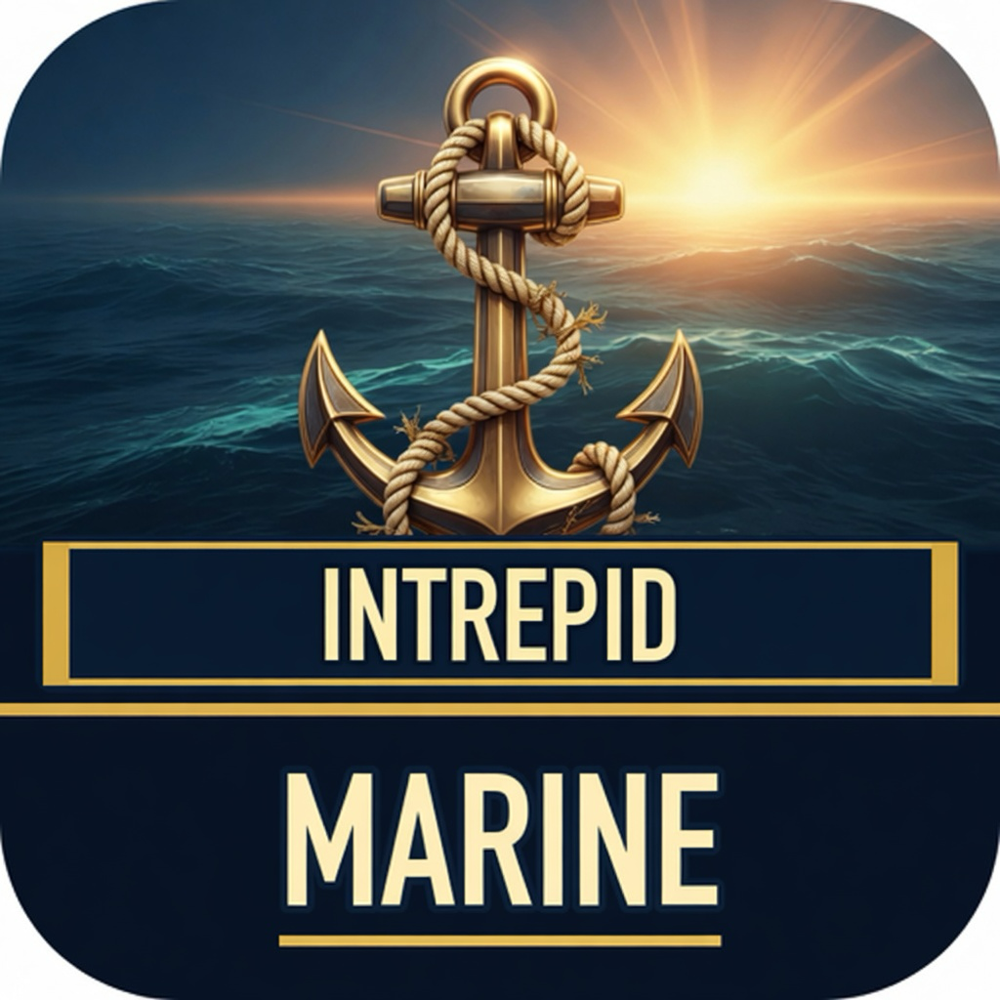
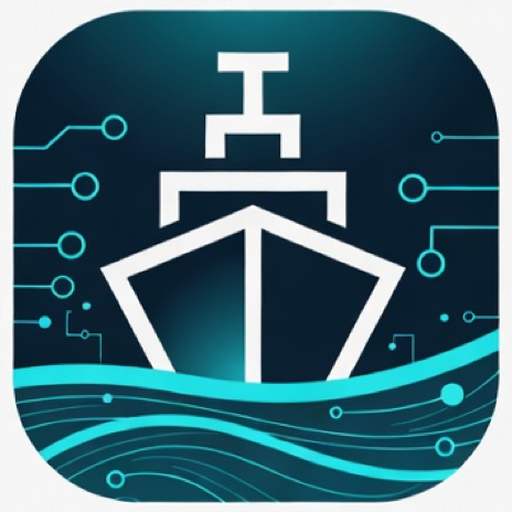

Letterhead, vessel name, HIN — the document you hand an insurer or a counter, not a screenshot dump.
Texas-built · Commercial marine · On-device
Software that survives a windy slip.
Intrepid Marine LLC builds practical apps for owners, yards, and crews who keep boats running. Showcase product: IntrepidMarine — radar, log, inventory, and paperwork a yard will take.
Texas-built
On-device
Commercial marine
No account

Proof, not adjectives
What a yard actually looks at.
Office texts the file. Field opens it. Each return appends. Nothing wipes the trail.
Useful offline. Records stay on the device until you share a file. Premium is export, not a lock.
Showcase product
IntrepidMarine
Live weather on the glass. Inventory the way a boat is actually stowed. A captain’s log that remembers the passage. Paperwork a yard will take seriously.



- Animated NWS NEXRAD radar with marine overlays — U.S. and greater North America public feeds
- Skipper inventory nested like lockers, with photos, loans, and vessel identity on the report
- Captain’s log, engine hours, pre-departure checklists, maintenance, surveys, insurance trails
- Yard handoff as PDF for people — and as a work-order package for MarineServiceTech
- No account required. Data stays on the device. Premium is backup and export, not a lock on the boat
Also from Intrepid Marine LLC
The rest of the line. Same discipline.
Yard tickets in MarineServiceTech. Land tickets in ServiceValet. House and garage in CRS.

Yards & marine techs
MarineServiceTech
Work orders for dockside and yard appointments — built to import a handoff from IntrepidMarine.

- Winterize, splash/launch, insurance, survey
- Diagnostic trees: fuel, zincs, inverter, A/C, thruster, rigging
- Letterhead PDF + spreadsheet (hours & money)
- Shareable
.msworkorderpackages
Trades & mobile crews
ServiceValet
The same field ticket — for the truck, the shop, and the job site that is not a slip.

- Jobs queue, schedule, estimates, emergency and warranty
- Photos, dictation, parts and labor lines
- Tools on the van; loan/borrow that does not vanish
- Share work orders by Messages, Mail, AirDrop, or Files

Home & garage
CRS
On-device inventory, field reports, garage sales, borrow/loan — the land-side cousin of IntrepidMarine.
The company
Commercial marine software, without the enterprise costume.
We are a small product shop. We also sit with operators and design how the work should actually move.
Intrepid Marine LLC started with a boat, a career in software, and the usual pile of photos, hours, and “I’ll remember that later.” The useful parts became IntrepidMarine — our showcase product — then a pair of field-service apps for yards and for land trades that live by the same rules.
We sell software. We also consult: branded editions for marine firms, workflow design for documentation and handoff, and straight talk about what belongs on a phone versus what belongs in a back office.
If it cannot survive a windy slip, a dead battery, and a tech who hates typing, it is not ready.
Contact
Start with IntrepidMarine — or with the operation you need to fix.
Product questions, yard workflows, branded editions, and consulting all land at the same address.